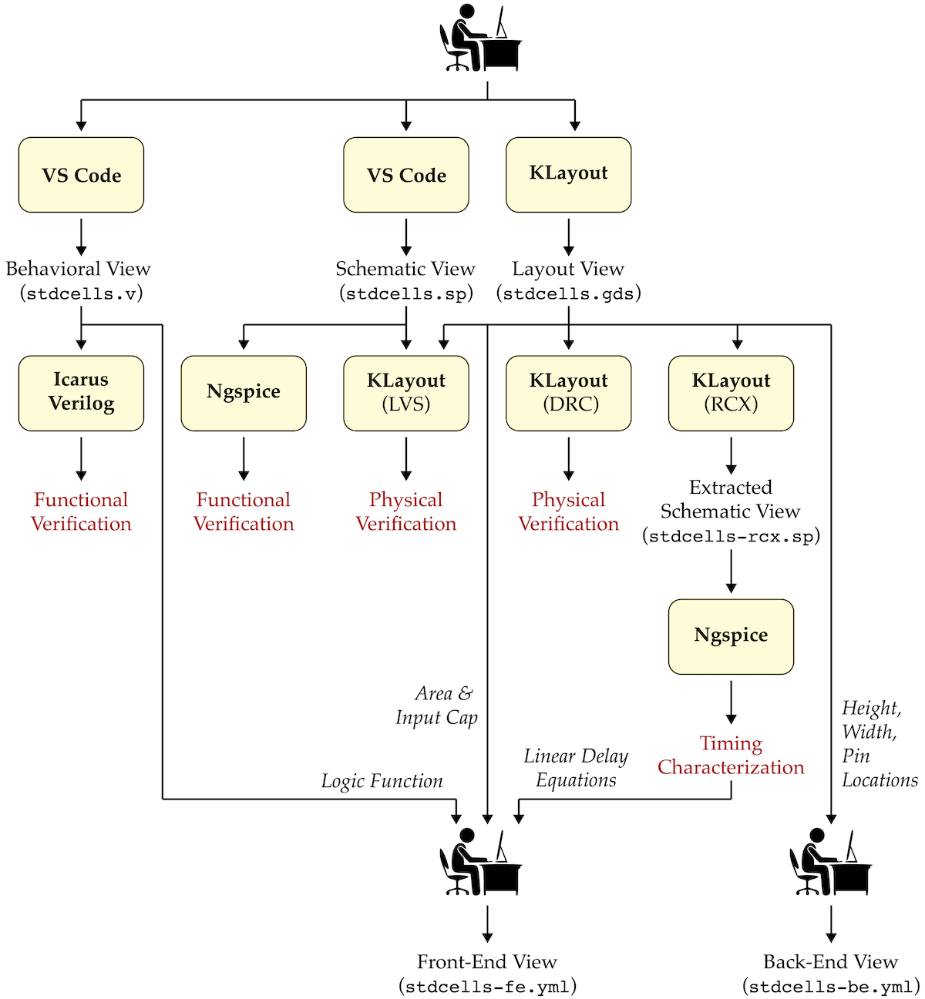

ECE 6745 Lab 2: Standard-Cell Inverter
In this lab, we will implement a standard-cell inverter including the corresponding behavioral, schematic, layout, extracted schematic, front-end, and back-end views.
-
Behavioral View: Logical function of the standard cell, used for gate-level simulation
-
Schematic View: Transistor-level representation of standard cell, used for functional verification and layout-vs-schematic
-
Layout View: Layout of standard cell, used for design-rule checking (DRC), layout-vs-schematic (LVS), resistance/capacitance extraction (RCX), and fabrication
-
Extracted Schematic View: Transistor-level representation with extracted resistance and capacitances, used for layout-vs-schematic (LVS) and timing characterization
-
Front-End View: High-level information about standard cell including area, input capacitance, logical function, and delay model; used in synthesis
-
Back-End View: Low-level information about standard cell including height, width, and pin locations; used in placement and routing
We will be using the following TinyFlow standard-cell design flow.

We will by begin by writing the behavioral view in Verilog and verifying its functionality using a Verilog test bench and Icarus Verilog. We will then write the schematic view in SPICE and verify its functionality using a SPICE test bench and Ngspice. We will then use the KLayout design editor to create the layout, perform a design-rules check (DRC), perform a layout vs. schematic check (LVS), and generate an extracted schematic. We will re-simulate the extracted transistor-level schematic using Ngspice to characterize the propagation delay for different load capacitances in order to create a linear delay model. Finally, we will write the front-end and back-end views for our standard-cell inverter in two YAML files. We will also implement three auxillary standard cells (i.e., FILL, TIEHI, TIELO).
1. Logging Into ecelinux with VS Code
Follow the same process as previous labs Find a free workstation Find a free workstation and log into the workstation using your NetID and standard NetID password. Then complete the following steps (described in more detail in the first lab):
- Start VS Code
- Install the Remote-SSH extension
- Use View > Command Palette to execute Remote-SSH: Connect Current Window to Host...
- Enter netid@ecelinux-XX.ece.cornell.edu where XX is an ecelinux server number
- Use View > Explorer to open your home directory on ecelinux
- Use View > Terminal to open a terminal on ecelinux
Now clone the lab repo as follows.
% source setup-ece6745.sh
% mkdir -p ${HOME}/ece6745
% cd ${HOME}/ece6745
% git clone git@github.com:cornell-ece6745/ece6745-lab02-stdcell-inv lab02
% cd lab02
% tree
The repo includes the following files:
- list files and brief description here
To make it easier to cut-and-paste commands from this handout onto the
command line, you can tell Bash to ignore the % character using the
following command:
Now you can cut-and-paste a sequence of commands from this tutorial
document and Bash will not get confused by the % character which begins
each line.
2. Standard-Cell Inverter
In this part, we will be implementing the six views for the standard-cell inverter. Remember that in addition to being DRC and LVS clean, your inverter must also follow all of the rules which make standard cells "standard":
- Standard transistor positions and orientation (PMOS at top, NMOS at bottom, vertical gates)
- Standard n-well size and location (n-well at top)
- Standard VDD and ground metal layer and locations (on metal 1, VDD rail 8 lambda tall at top, ground rail 8 lambda tall at bottom)
- Standard n-well and substrate contacts
- Standard boundry and extension of n-well, VDD, and ground rails beyond boundry (origin is in lower left)
- Standard metal 2+ routing grid (8 lambda track spacing)
- Standard cell height (64 lambda$)
- Standard cell width (aligned to routing grid, i.e., 8 lambda\(, 16 lambda\), 24 lambda$, etc)
- Standard pin layer and locations (on metal 1 and on routing grid)
- Standard set of available drive strengths with equal rise and fall times
2.1. Behavioral View
- discuss running the test bench using iverilog
2.2. Schematic View
- remind students the general format like in lab 1
- discuss new tinyflow-ngspice script for functional verification
2.3. Layout View
- show them what the final layout should look like (we show them in lecture)
- explain the pselect and nselect which were not show in lecture
- remind students where to find the DRM
- discuss the template we give them
- discuss how to "trim the template" to make cell more compact
2.4. Extracted Schematic View
- same as in lab 1 ... need to copy into stdcells-rcx.sp
- explain how to run simulations for both rising and falling time using tinyflow-ngspice with three different load values, they need to put in a spreadsheet and do a linear regssion to find Y intercept and slope
- select worst case linear delay equation
2.5. Front-End View
- explain the YAML format including units!
- explain where to get the information from
2.6. Back-End View
- explain the YAML format including units!
- explain where to get the information from
3. Standard-Cell FILL
- do we need all views for FILL?
3.1. Behavioral View
3.2. Schematic View
3.3. Layout View
3.4. Extracted Schematic View
3.5. Front-End View
3.6. Back-End View
4. Standard-Cell TIEHI, TIELO
- do we need all views for TIEHI, TIELO?